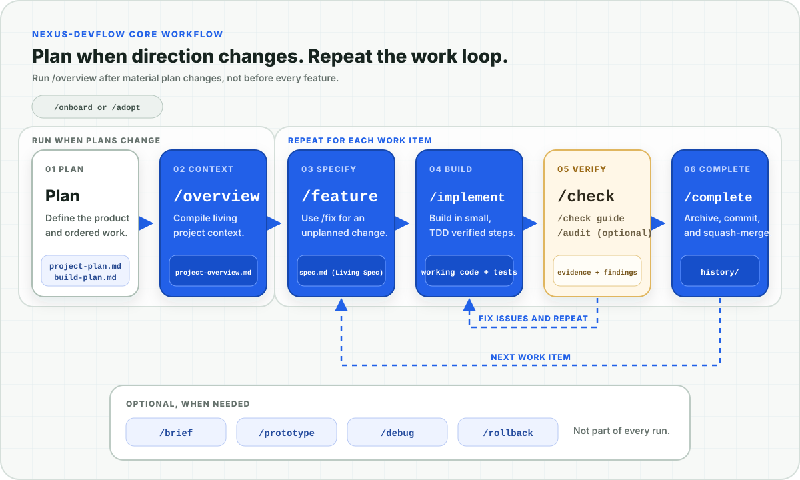

Core Workflow (วงจรเวิร์กโฟลว์หลัก)
ทำความเข้าใจความเชื่อมโยงระหว่างการวางแผน (Planning), การลงมือพัฒนา (Implementation), หลักฐานการตรวจรับ (Evidence) และการส่งมอบงาน (Completion)
ภาพรวมเวิร์กโฟลว์เชิงภาพ (Visual overview)
วงจรการพัฒนาโปรเจกต์ใหม่เริ่มต้นด้วยคำสั่ง /onboard ซึ่งจะแปลงแผนงานของคุณให้เป็นภาพรวมบริบทของโปรเจกต์ (Project Overview) จากนั้นจะเข้าสู่วงจรการทำงานซ้ำในแต่ละฟีเจอร์ผ่านการกำหนดสเปก (Spec), การลงมือเขียนโค้ด (Implement), การพิสูจน์ตรวจรับ (Proof), การตรวจทาน (Review) และการส่งมอบงาน (Completion)
คุณสามารถเขียนแผนงานลงในไฟล์โดยตรง หรือรันคำสั่ง /discovery เพื่อให้ AI ช่วยสัมภาษณ์และวางโครงสร้างแผนงานอย่างลึกซึ้ง สำหรับโปรเจกต์ที่มีโค้ดเดิมอยู่แล้ว ให้เริ่มต้นด้วยคู่มือ Existing Codebase แทนคำสั่ง /onboard

- 🌐 Nexus-DevFlow System Architecture Map (Interactive HTML) — แผนผังสถาปัตยกรรมระบบและ 3-Pillars Model
- ⚡ Living Spec Lifecycle & State Machine (Interactive HTML) — แผนผัง State Machine และ 4-Stage Progressive Rail
4 Slicing Archetypes Framework (การซอยฟีเจอร์อย่างมีประสิทธิภาพ)
เมื่อพบฟีเจอร์ขนาดใหญ่ใน build-plan.md หรือในขั้นตอน /discovery DevFlow มีแบบแผนมาตรฐานในการแบ่งย่อยงาน (Slicing) ออกเป็น 4 รูปแบบ เพื่อให้แต่ละฟีเจอร์สามารถสร้าง ทดสอบ และรีวิวได้จบในตัว:
| Archetype | สัญลักษณ์ | กลยุทธ์การแบ่งงาน (Strategy) | เมื่อไหร่ควรเลือกใช้ (When to use) |
|---|---|---|---|
| 1. Skateboard | 🛹 | Minimal Functional Loop: พัฒนาเฉพาะแกน Logic/Algorithm หลักแบบ End-to-End ด้วย UI แบบ Minimal (หรือ CLI) เพื่อพิสูจน์การทำงานจริงก่อนทำ UI สวยงาม | ฟังก์ชันที่เน้นความถูกต้องของการคำนวณ, Logic ทางธุรกิจที่ซับซ้อน หรือระบบประมวลผลข้อมูล |
| 2. Facade | 🎭 | Rich UI/DX with Mock Backend: สร้างหน้าจอ ส่วนติดต่อผู้ใช้ และ Interaction ที่สมบูรณ์แบบโดยใช้ Mock Data ก่อนต่อระบบ Backend จริง | ฟีเจอร์ที่ต้องอาศัย Feedback ด้าน UX/UI จากผู้ใช้งานจริง, Dashboard, หรือ Form กรอกข้อมูลหลายขั้นตอน |
| 3. Tracer Bullet | 🎯 | Deep Vertical Slice: ผ่าตรงผ่านทุก Layer ของระบบ (Database ➔ API ➔ Business Logic ➔ UI) สำหรับ 1 Happy Path แรกที่ใช้งานได้จริง | เมื่อต้องการทดสอบการเชื่อมต่อสถาปัตยกรรมข้ามระบบครั้งแรก (Architecture Feasibility) |
| 4. Journey | 🧭 | Step-by-Step User Journey: แบ่งฟีเจอร์ตามลำดับขั้นตอนในเส้นทางของผู้ใช้ (เช่น Onboarding ➔ Creation ➔ Preview ➔ Export) | Workflow การทำงานที่มีหลายหน้าจอ หรือขั้นตอนที่ต้องทำต่อกันเป็นลำดับ |
Mechanical Input Coverage Spec Gate (การสกัดกั้น AI Hallucination)
เพื่อป้องกันไม่ให้ AI Coding Agent คิดเองเออเองหรือแอบตัดสินใจเชิงสถาปัตยกรรมระหว่างการเขียนโค้ด (Silent Architectural Drift) DevFlow กำหนดให้ทุก Living Spec ต้องผ่านเกณฑ์ Mechanical Input Coverage Test ก่อนเริ่มลงมือพัฒนา:
ทุกค่า/ข้อมูลที่โค้ดต้องสร้างหรือแสดงผล (Produced Values)
└── ต้องระบุที่มา (Named Data Source) ไว้อย่างชัดเจนใน Spec เสมอ:
├── Database Schema / Column
├── Request Parameter / Input Argument
├── External API Response Field
└── Prior Architectural Decision (ADR)/grill เพื่อบันทึกข้อสรุปก่อน
การสำรวจและวิเคราะห์ไอเดีย (Explore an idea)
เมื่อคุณมีไอเดียใหม่หรือข้อสงสัยเชิงเทคนิคแต่ยังไม่แน่ใจว่าจะทำหรือไม่ DevFlow มีชุดคำสั่งช่วยเหลือที่ทำงานแบบ Read-Only โดยไม่แก้ไขโค้ดหรือบังคับเขียนแผนงานล่วงหน้า:
/explore: สำรวจไอเดียและวิเคราะห์ความเป็นไปได้เชิงสถาปัตยกรรม เปรียบเทียบทางเลือกและข้อดีข้อเสีย (Trade-offs) กับโค้ดจริงในโปรเจกต์โดยตรง/brief: สรุปและอธิบายขอบเขต ความสัมพันธ์ พื้นที่ที่ได้รับผลกระทบ และขนาดของงานสำหรับฟีเจอร์ที่อยู่ในbuild-plan.mdเพื่อช่วยในการตัดสินใจลำดับการพัฒนา/idea: บันทึกไอเดียเข้าสู่devflow/ideas.mdพร้อมให้ AI วิเคราะห์ Feasibility Score, Value และ Key Points ให้โดยอัตโนมัติ/brainstorm: ระดมสมองและสังเคราะห์ทางเลือกในการออกแบบระบบ 2-3 แบบ พร้อมเปรียบเทียบข้อดีข้อเสียก่อนตัดสินใจเลือกแนวทาง/grill(หรือalign): จัดเซสชันสัมภาษณ์เชิงลึกแบบ Socratic Interview เพื่อทดสอบความสมบูรณ์ของแผนงาน สกัด Glossary คำศัพท์ทางธุรกิจ และบันทึก Architecture Decision Records (ADRs) ลงในdevflow/decisions/
การสร้างและจัดตั้งแผนงาน (Establish the plan)
คุณเป็นเจ้าของไฟล์ devflow/project-plan.md และ devflow/build-plan.md อย่างแท้จริง โดยขั้นตอน Overview จะตรวจสอบไฟล์แผนงานเหล่านี้และคอมไพล์เป็นบริบทที่กระชับเพื่อให้ AI โหลดอ่านตามความต้องการจริง (On-demand):
เขียนแผนงานลงไฟล์โดยตรง ────────────────────────────▶ /overview
หรือรัน /discovery ──▶ ตรวจสอบและอนุมัติแผนงาน ───────▶ /overviewทั้งสองแนวทางจะสร้างไฟล์แผนงานที่ผู้ใช้เป็นเจ้าของเหมือนกัน โดย /discovery จะไม่ถูกบังคับรันจากขั้นตอน Onboarding และไม่เป็น Gate ขัดขวางการรัน Overview
/overview สำเร็จ ระบบจะเสนอทางเลือกในการสร้าง Commit ตั้งต้น chore: establish DevFlow project baseline โดย AI จะแสดง Diff ให้ตรวจสอบและรอการอนุมัติก่อนเสมอ
วงจรการพัฒนาซ้ำในแต่ละฟีเจอร์ (Repeat for each feature)
การพัฒนาในชีวิตประจำวันจะโฟกัสทีละหนึ่งขอบเขตงานที่แยกขาดจากกัน (Task Isolation):
/feature ──▶ /implement ──▶ /check ──▶ /audit current ──▶ /complete| ขั้นตอน (Stage) | คำสั่ง (Command) | ผลลัพธ์และหน้าที่ของ Skill (Result & Role) |
|---|---|---|
| 1. Specify (กำหนดสเปก) | /feature [id] |
จัดสรร Running ID (เช่น 001-user-auth), สร้าง Workspace เฉพาะงานใน devflow/context/{xxx-slug}/, ร่าง Living Spec (spec.md) พร้อมเกณฑ์ Done-when และหยุดรอการอนุมัติสเปก |
| 2. Build (ลงมือสร้าง) | /implement [id] |
สลับ branch ไปยัง feature/{xxx-slug}, ดำเนินการเขียนโค้ดตาม Task Checklist ด้วยวินัย Strict TDD (Red-Green-Refactor) และรัน Verify เมื่อมีการตั้งค่าไว้ |
| 3. Prove (พิสูจน์ตรวจรับ) | /check [id] |
ตรวจรับระดับ Senior QA รันแอปพลิเคชันจริงเทียบกับเกณฑ์ Done-when, รัน Verification Matrix และบันทึกหลักฐานเชิงประจักษ์ (Empirical Evidence) |
| 4. Review (ตรวจทานโค้ด) | /audit current |
ตรวจทานการเปลี่ยนแปลงของโค้ดในเซสชัน ค้นหาช่องโหว่ความปลอดภัย ข้อบกพร่องด้านประสิทธิภาพ และบันทึกประเด็นที่ต้องแก้ไขลง findings.md |
| 5. Land (ส่งมอบงาน) | /complete [id] |
ตรวจสอบ Verify ซ้ำครั้งสุดท้าย, บันทึก Release Digest, ย้ายเอกสารเข้าสู่ devflow/history/, ลบ Workspace ชั่วคราว, อัปเดต build-plan.md และทำ Git Squash-Merge เข้าสู่ main |
การรันแผนงานแบบต่อเนื่องอัตโนมัติ (Run the remaining plan continuously)
คำสั่ง /continuous หรือ $continuous เป็นโหมดการทำงานอัตโนมัติสำหรับรันฟีเจอร์ที่ยังไม่ได้ทำใน devflow/build-plan.md แบบต่อเนื่องหลายรายการโดยไม่ต้องหยุดรอการอนุมัติระหว่างขั้นตอนย่อย:
/continuous ──▶ หยิบฟีเจอร์ถัดไป ──▶ รัน Spec/Implement/Check/Gates ──▶ Local Completion & Merge ──▶ ทำซ้ำBuild Plan จะทำหน้าที่เป็นคิวงานโดยตรง แต่ละฟีเจอร์ยังคงแยก Branch, รันการทดสอบ TDD, บันทึกประวัติ และทำ Local Squash-Merge เข้าสู่ main อย่างปลอดภัย
การย้อนกลับฟีเจอร์ที่ส่งมอบแล้ว (Reverse a completed feature)
เมื่อจำเป็นต้องถอดถอนฟีเจอร์ที่ส่งมอบไปแล้วออกจากระบบ ให้ใช้คำสั่ง /rollback <feature-id>:
/rollback 4 ──▶ วิเคราะห์ความเสี่ยงและสร้าง Rollback Spec ──▶ /implement ──▶ /check ──▶ /completeคำสั่ง Rollback จะจับคู่รายการใน Build Plan กับประวัติใน devflow/history/ และ Git Commit ที่ตรงกัน จากนั้นจะวิเคราะห์ความเสี่ยงของ Commit หลังจากนั้นและร่าง Rollback Spec ที่รัดกุม